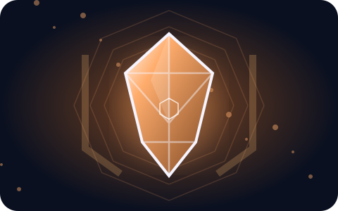

T1 · Reinforced Body
Effective Unbreaking II on equipment, complete fall-damage immunity, and suffocation immunity.
Anchor is the equipment and gravity gem, ending with a high-mobility mace ascension.
Each tier adds to the last unless an ability explicitly replaces an earlier one. Exact effects may be balanced during testing.
← Browse all gems
Effective Unbreaking II on equipment, complete fall-damage immunity, and suffocation immunity.
1.3× XP gain and 25% cheaper anvil/enchanting XP costs.
90% chance for tools to avoid durability loss, plus 15% chance to repair 1 durability when mining eligible natural blocks.
Swap positions with a targeted player or hostile mob within 15 blocks. Gain Resistance I for 5s. 60s cooldown.
Armor loses 50% less durability. Also unlock Gravity Crush, pulling enemies within 6 blocks toward you and applying Slowness II for 3s. 90s cooldown.
15s duration, 180s cooldown. Launch up to 15 blocks upward, gain Jump Boost III, one extra midair launch, temporary mace transformation with Density III and Wind Burst I, meteor shockwaves, and fall immunity during and briefly after the effect.
Start by learning your first two abilities, then build toward the advanced combo at Tier 4 and the signature Tier 5 unlock. Ascension requires Tier 5, 10 energy, and the Ascension ritual.
Check recipes for crafting ingredients and progression for upgrade requirements.